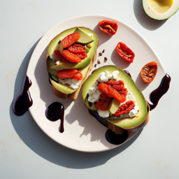

Extravagant Avocado Toast

A luxurious twist on a trendy favorite
Avocado toast has become a popular breakfast and brunch dish in recent years,
thanks to its delicious taste and healthy ingredients. This extravagant version takes the classic dish to a new level,
adding gourmet toppings that will make your taste buds sing.
In addition to creamy avocado, this toast features smoked salmon, goat cheese,
sun-dried tomatoes, and a drizzle of balsamic glaze. The flavors meld together beautifully,
creating a rich and satisfying meal that is perfect for special occasions or when you simply want to treat yourself.
Prepare to be wowed by this luxurious take on avocado toast. You may never want to go back to the basic version again!
Ingredients
- 4 slices of artisanal bread (sourdough, multigrain, or your favorite variety)
- 2 ripe avocados
- 1 tablespoon fresh lemon juice
- Salt and pepper, to taste
- 4 ounces smoked salmon
- 4 ounces goat cheese, crumbled
- 1/2 cup sun-dried tomatoes, thinly sliced
- 1/4 cup balsamic glaze
- Fresh dill or microgreens, for garnish (optional)
Directions
- Toast the bread slices to your desired level of crispiness.
- In a medium bowl, mash the avocados with the lemon juice, salt, and pepper until you reach your preferred consistency.
You can make it smooth or leave some chunks for texture.
- Spread a generous layer of avocado mixture onto each slice of toasted bread.
- Top each slice with smoked salmon, crumbled goat cheese, and sliced sun-dried tomatoes.
- Drizzle balsamic glaze over the toast, and garnish with fresh dill or microgreens, if desired.
- Enjoy your extravagant avocado toast with a fork and knife or simply pick it up and savor the flavors!